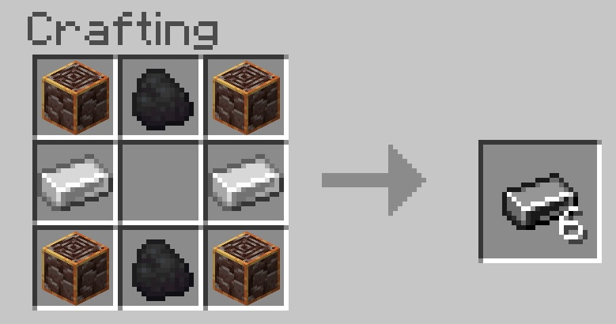
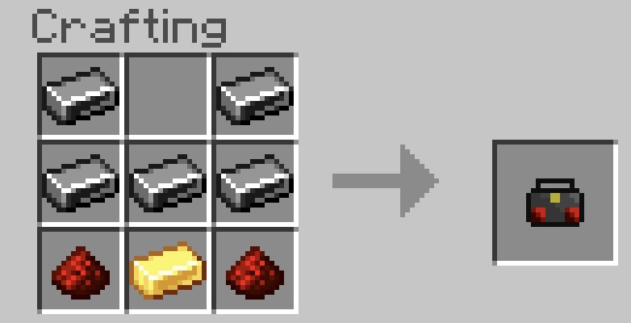
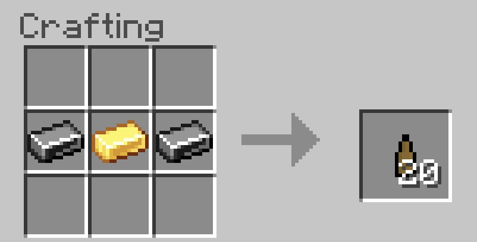
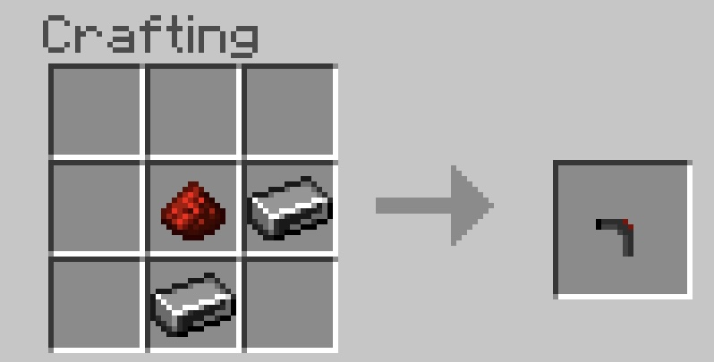
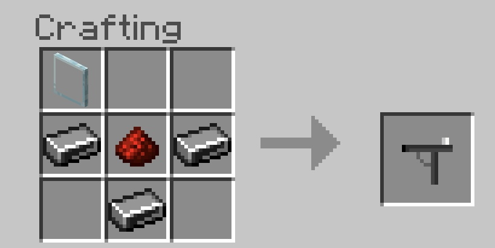

Steel was added on April 22nd, 2023. It is a complex alloy made out of ancient debris, iron ingots, and coal. It can be used to make more advanced tools and machinery.
Textures for all items are available for both Java and Bedrock. However, we are unable to texture the gun bullet and actual armor model due to in-game limitations.
Steel ingots are the base material for all steel crafts.

With steel, you can upgrade your iron armor. When wearing the full steel armor set, you get resistance I. Upgrading your armor will keep all enchantments.
To upgrade a piece of armor, hold it in your hand. Next, make sure you have 4 steel ingots. Then, do /upgradearmor. Done!
Radios are a fun bonus item. When right clicking, they can tell you one of 6 messages. The messages are changed every now and then. Sometimes, they can give gameplay tips and hints to future updates.

Ranged weaponry can be activated by right clicking.
For all guns, there is only one type of ammo. Every gunshot consumes only one ammo.

The pistol can fire every 0.5 seconds. It does 19 damage per hit.

The sniper rifle can fire every 4 seconds. Up close, it deals 12 damage, but far away, it deals 30 damage.

The Steel Update launched, adding steel ingots, steel armor, radios, pistols, and sniper rifles.